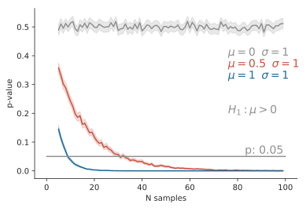
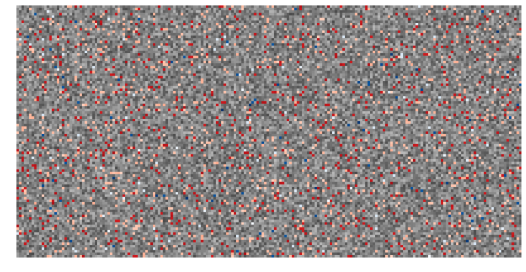
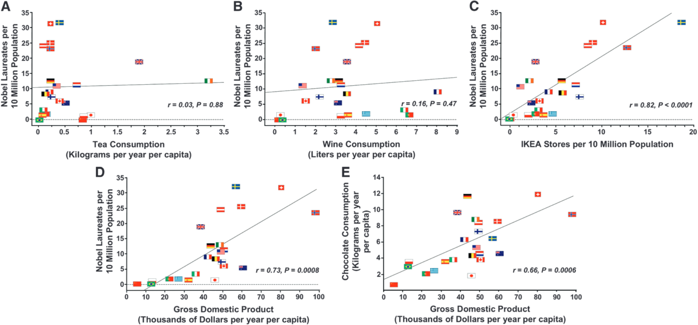
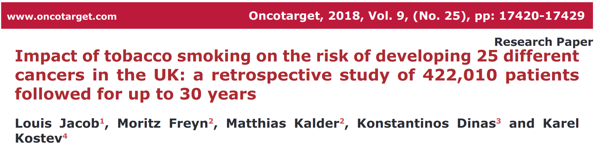

Common stats mistakes from (and for) scientists
| Alex M. Ascensión |
|---|

.
101 STATS
Descriptors: median (M) and Median Absolute Deviation (MAD)
$\small{\text{Mean: } \mu = \frac{ 1}{N}\sum_i^N x_i \qquad \text{Variance: } \sigma^2 = \frac{1}{N}\sum_i^N(x_i - \mu)^2}$
Distributions
Inference tests
$\begin{cases} \scriptsize{ H_0: \hat{\mu}_{H_1} \le / = \mu_{H_0} }\\ \scriptsize{ H_1: \hat{\mu}_{H_1} >/\neq \mu_{H_0} } \end{cases} \rightarrow t, F, \chi^2,\cdots \rightarrow p\text{ - value}$

I
Absence of [quality]
control group
Test
$\stackrel{\text{weight}}{\normalsize A}\;$ $\stackrel{\text{height}}{\normalsize B}\;$ $\stackrel{\text{age}}{\normalsize C}\;$ $\cdots\;$ $\stackrel{\text{income}}{\normalsize X}\;$ $\stackrel{\text{schizophrenia}}{\normalsize Y}\;$ $\stackrel{\text{drug X}}{\normalsize Z}$
Control [ideal]
$\stackrel{\text{weight}}{\normalsize A}\;$ $\stackrel{\text{height}}{\normalsize B}\;$ $\stackrel{\text{age}}{\normalsize C}\;$ $\cdots\;$ $\stackrel{\text{income}}{\normalsize X}\;$ $\stackrel{\text{schizophrenia}}{\normalsize Y}\;$ $\stackrel{\text{placebo}}{\normalsize \color{#8c0d04}{Z^*}}$
Control [real]
$\stackrel{\text{weight}}{\normalsize A}\;$ $\stackrel{\text{height}}{\normalsize \color{#8c0d04}{B^*}}\;$ $\stackrel{\text{age}}{\normalsize C}\;$ $\cdots\;$ $\stackrel{\text{income}}{\normalsize \color{#8c0d04}{X^*}}\;$ $\stackrel{\text{schizophrenia}}{\normalsize Y}\;$ $\stackrel{\text{placebo}}{\normalsize \color{#8c0d04}{Z^*}}$
Common problems
- Experimenters are not blinded
- Control & exp. groups sampled at different times
- $N_{\text{control}} \neq N_{\text{exp}}$
- All biological heterogeneity is not considered in the experimental / control group.
Some examples (I)
Dummies are designed as average male (based on height/weight)
“The fatality risk of a female driver is an estimated 17.0 ± 1.5 percent higher than for a male of the same age, given similar physical insults.” NHTSA
Some examples (II)
Ambien (zolpidem) is a sedative.
Clinical trials were done in caucasic men, age 30, weight $\sim$ 70 kg.
Women metabolize ambien more slowly $\rightarrow$ women driving to work still groggy.
FDA recommended halving the intake (source).
Solution [hard]
Be aware of as many variables as possible
Present conclusions as tentative
II
Inflating the degrees
of freedom
What is a degree of freedom?
N of independent pieces of information to calculate the estimate
- DoF 1 sample: $N-1$
- DoF 2 samples: $N_1 + N_2 - 2$
Why are DoF important?
(1 sample)
We are going to simulate normal data: $X \sim N(\mu_X, \sigma_X)$. We want to test whether $\mu_X > 0$.$\begin{cases} H_0: \hat{\mu}_X \le 0 \\ H_1: \hat{\mu}_X > 0 \end{cases}$
Why are DoF important?
(1 sample)
Why are DoF important?
(1 sample)
Extending DoF to 2 samples.
What is the DoF?
20 - 2 = 18
$\tiny{\begin{cases} H_0: \mu_A = \mu_B\\ H_1: \mu_A \neq \mu_B \end{cases}}$
Extending DoF to 2 samples.
What is the DoF?
10 - 1 = 9
$\tiny{D = x_t - x_0\;\;\begin{cases} H_0: \mu_D = 0\\ H_1: \mu_D \neq 0 \end{cases}}$
Solution [easy]
Adapt to DoF and rerun the test.
If results become not significant, present them as tentative.
III
Interpret comparisons between groups without comparing them
$\tiny{\begin{cases} H_0: \mu_X \le 0 \\ H_1: \mu_X > 0 \end{cases}}$
Solution [easy]
Avoid comparing statistics from different tests at once
Run tests to compare the two effects (e.g. ANOVA)
IV
Data is not normal
Many biological variables are not normal!
231 curated papers with non-normal data: Gamma, Negative Binomial, Binomial, etc.
In transcriptomics, most of the data is skewed too!
Anscombe's quartet
Datasets from different distributions can share similar descriptors!

Anscombe's quartet
Datasets from different distributions can share similar descriptors!
| $\mu_X$: 9 |
| $\sigma_X$: 11 |
| $\mu_Y$: 7.5 |
| $\sigma_Y$: 4.125 |
| Correlation $X,Y$: 0.816 |
| Linear regression: $y = 3 + 0.5x$ |
| Median |
| Median Absolute Deviation |
Datasaurus!

Therefore...
beware of the mean, variance, correlation of datasets!
Solution [easy]
Assert normality of data: Shapiro-Wilk test (!!!)
If not, use non-parametric statistics
- t-test (1 var) $\rightarrow$ Wilcoxon rank test
- t-test (2 var) $\rightarrow$ Mann-Whitney U test
Use robust estimators
- Mean $\rightarrow$ median
- Variance (2 var) $\rightarrow$ Mean Absolute Deviation
Are robust estimators better?
If the data is not normal or has outliers, yes!
Let's see some examples.
Robust estimators for non-normal distributions
Robust estimators are better with outliers
V
Low sample numbers
Let's play a game
www.kahoot.it > Enter game PIN
And this is not made up!
import numpy as np
import scipy as scp
for seed in tqdm(range(10000)): #seed is 4327
n = 15
np.random.seed(seed)
N = scp.stats.norm(0,1)
S2 = scp.stats.skewnorm(2)
S10 = scp.stats.skewnorm(10)
Nrvs, S2rvs, S10rvs = N.rvs(n), S2.rvs(n), S10.rvs(n)
if np.mean(S2rvs) < 0.45 and np.mean(Nrvs) > 0.7:
break
Shapiro Wilk is even worse at guessing
So...
- Biological variables might not be normal
- Shapiro-Wilk test fails for low n
Any solutions?
Solution (Assuming normality) [hard?]
Calculate sample size. If we expect $|\hat{\mu} - \mu| = D$ then, with $\alpha=0.05$ (one tail):
$\small{z_{0.05} = 1.65 \le \frac{\mu - \hat{\mu}}{\hat{\sigma}/\sqrt{n}} = \frac{D \sqrt{n}}{\hat{\sigma}} \iff n \ge \left(\frac{z_{0.05}\hat{\sigma}}{D}\right)^2}$
$\color{#cc503e}{2.73\left( \frac{\hat{\sigma}}{D} \right)^2}$
We barely ever have that info, and it does not acknowledge $\beta$.
Solution II [easy]
Apply a lower $\alpha$: 0.01 or 0.005: is it better a FP or a FN?
Include effect sizes (Cohen's d, Hedges' g, odds ratio, test statistics).
95% Confidence Interval (parametric), 2 and 98 percentiles of Walsh averages (non-parametric).
Walsh averages
- For $a_1, a_2, \cdots, a_n$ measurements, take all $s_{ij} = (a_i + a_j)/2\;\;i \le j$
- Order the list $(s_{11}, s_{12}, \cdots, )$ and take the 2 and 98 percentiles.
VI
Spurious correlations
Pearson correlation
Really useful for common datasets. But it has some assumptions. The most troublesome ones are:
- No outliers
- Normality
- Continuity
- Linearity
- Random variables come from same distribution
We will put examples of spurious correlations and their viable solutions.
No outliers [Problem]
Solution: Spearmann correlation
Spearman correlation is calculated on the rank of the variables, not on their values.
More robust to outliers, non-linearity and non-normality.
Solution: Spearmann correlation
Random variables from different distributions

Solution [medium]
Assert normality and linearity. If not, try Spearmann correlation
Assert data is monomodal, or cannot be divided into categories.
Outliers: check meaningfulness, else Spearmann
VII
Circular analysis
What is circular analysis?
“In statistics, circular analysis is the selection of the details of a data analysis using the data that is being analysed.” Wikipedia
It is easy to find patterns were there are none
Examples of circular analysis
- Genomic analysis: apply filter until our set of genes appears.
- Apply filters/thresholds to points that do not "fit the data".
- In functional magnetic resonance imaging (fMRI) data, pre-processing is often needed, and might be applied incrementally until the analysis 'works'. (Wikipedia)
Solution [medium]
Let's give a glance at machine learning (they have learned to do it well).So... how can we apply this?
If there are enough technical replicates / data points... subset the data into training / test set (60/40 or 70/30). Consider the results as "valid" if they replicate in test set.VIII
Failing to correct for
multiple comparisons
One statistic test at a time!
We must not forget that one test is for a specific variable: a gene, a voxel, an experiment...
A theoretical example: gene expression
A theoretical example: gene expression
A theoretical example: gene expression
A practical example: a salmon in a social environment
Bennett CM, Baird AA, Miller MB, Wolford GL. Neural correlates of interspecies perspective taking in the post-mortem Atlantic salmon: an argument for proper multiple comparisons correction . J Serendipitous Unexpected Results 2009 ; 1: 1–5.
Solution [easy]
- Be aware that we are multitesting.
- Apply more stringent p-values (GWAS: $\sim 10^{-8}$).
- Apply multiple test correction.
- Bonferroni: $\alpha^* = \frac{\alpha}{N}$. (Maybe too stringent)
- Benjamini-Hochberg (aka FDR).
IX
Over-interpreting
non-significant results
What happens when p > 0.05?
The test is negative, there is no effect. Well, not always. It can imply that...- there is too much noise (resolutive power of technique not enough)
- the dataset is too small
Solution [medium]
Assess the minimum $n$ and the statistical power before the analysis.
Assert the power is enough after analysis.
If not sure (or not possible), do not over-interpret negative results.
X
Correlation does not imply
causation!
Finding correlations is easy
explaining their cause is not.
Let's see some examples.
Nobel awards VS ...
10.3945/jn.113.174813
It all boils down to...
confounding variables.
Maybe more talkative / social people are perceived as more attractive, and also find better jobs?
A more important case: smoking causes cancer
Maybe a better diagnosis implied a higher detection rate.
Maybe people genetically predispose to smoking have higher chances of lung cancer.
Maybe industrial development incited easyness to tobacco, and easyness to cars $\rightarrow$ cancers are cause by pollution in general.
Solution [hard]
Be aware of possible underlaying confounding variables, and try to detect them
If confounding variables are found, try to adjust data.
Some methods exist to determine causality (for time series): Convergent Cross Mapping, Granger causality test.
If unsure, present conclusions as tentative